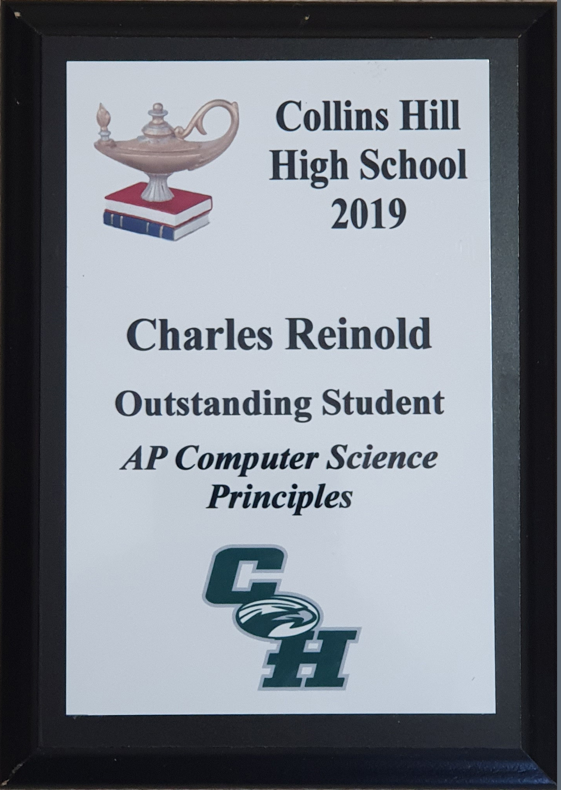

Summary
I'm a self-taught application / front end web developer. I've been learning various different programming languages since middle school. I've been a script developer for two separate gaming communities using languages such as NodeJS, Python, CSS, C# and Lua. In 11th grade I earned the AP Computer Science Student of the year award and achieved a 5 (perfect score) on my AP Computer Programming Course Test (earning 3 college credits). I'm fluent in NodeJS, Java, C#, Python, Excel, and front end web developement languages (HTML, CSS, Javascript). Over the years I've picked up the basics of far more languages and if needed I'm a quick learner when it comes to new technologies.
Skills
- Front-End Developement: This portfolio page was built from scratch with these languages as a personal project.
- Microsoft Excel (College Course)
- Back-End Developement
- Java
- AP Computer Programming (12th Grade)
- Currently Tutoring One Student for College-Level Course
- Python
- AP Computer Science Principles (11th Grade)
- Group chat bots using Discord.py (API Wrapper)
- Native API Experience with NASA Random Image of the Day API
- Lua
- Professionally Developing Lua Scripts for FiveM Communities
- Using Discord Webhook API to integrate FiveM and Discord
- C#
- Developing C# scripts for FiveM Communities
- Developing Windows Forms Tools for Various Automation Projects
- MySQL Databases
Experience
Developer Experience
- Developed many complex discord chat bots using Python and NodeJS
- Lead Developer for PowerRP FiveM Community (Lua + Front end technologies for UI)
- Script Developer for Celestial Network Gaming Community (Source Pawn - similar to C)
- Web Designer for Celestial Network Gaming Community (CSS)
- Script Developer for AltV Gaming Community (NodeJS)
- Script Developer for FiveM (C#)
Other Work Experience
- Kroger: Courtesy Clerk
(August 2019 - March 2021)
- Kroger: Cashier
(August 2020 - March 2021)
- Kroger: Self Checkout Attendant
(November 2020 - March 2021)
Education
- Attending Georgia Gwinnett College for Software Developement
(August 2020 - Present)
- Attended Collins Hill High School
(August 2016 - May 2020)